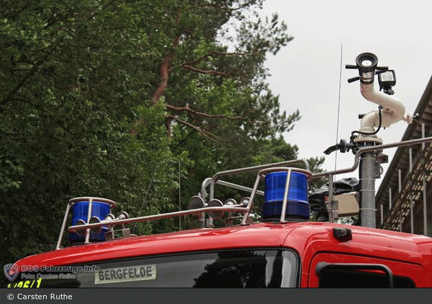
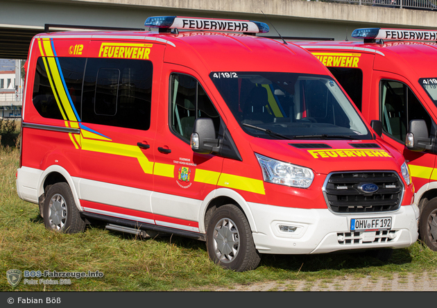
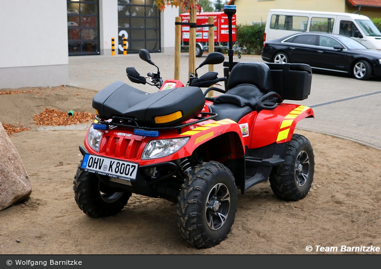

LZ-Bergfelde
Löschzug 2 Bergfelde

112 - Wer kommt da eigentlich, um Hilfe zu leisten?
Natürlich kann jeder diese Frage beantworten: Die Feuerwehr - Nur haben Sie sich diese Frage schon einmal ein weiteres Mal gestellt?
WER kommt da eigentlich ...?
Das Feuerwehrwesen in Deutschland ruht zu 96% auf freiwilligen, ehrenamtlichen Kräften - nur 4% sind Angehörige einer Berufsfeuerwehr. Etwa 24.000 Wachen der freiwilligen Feuerwehren und nur 300 ständig besetzte Wachen stehen den Feuerwehren als Stützpunkt zur verfügung. Die Berufswehren sind hauptsächlich in Ballungsräumen anzutreffen. Im Landkreis Oberhavel gibt es keine Berufsfeuerwehr!
WER kommt denn dann in Bergfelde und Hohen-Neuendorf, wenn es keine Berufsfeuerwehr gibt ...?
Möglicherweise der Mechaniker, dem Sie eben noch Ihr Auto zur Reparatur anvertraut haben ... oder die Verkäuferin, die Ihnen eben noch Ihr Brot in der Bäckerei überreicht hat ... oder ein Beamter aus dem Rathaus ... dies sind nur Beispiele an Berufsgruppen, die in der Bergfelder Feuerwehr anzutreffen sind.
Allen gemeinsam ist, dass sie durch die Teilnahme an qualifizierten Ausbildungen und dem Einsatz von viel privater Freizeit in der Lage sind, hochprofessionelle Hilfe zu jeder Zeit zu leisten. Die Angehörigen der Freiwilligen Feuerwehren sind 24 Stunden am Tag an 7 Tagen der Woche für Sie bereit, jederzeit alles stehen und liegen zu lassen und zum Einsatz auszurücken. Die Alarmierung erfolgt heutzutage vornehmlich über Funkmeldeempfänger, die die Kameraden bei sich tragen.
Je nach Tageszeit erreicht die FF Bergfelde Ausrückezeiten zwischen 4 und 10 Minuten und ist im Gebiet von Bergfelde höchstens vier Minuten später vor Ort.
Zugführer:
Herr Thomas Bruch
Gegründet: 7. Januar 1909
Einsatzabteilung: 34 Kameraden*innen
Jugendabteilung: 15 Kameraden*innen
Fahrzeuge
LF-8/6 TH (Florian Oberhavel 04/42-01)TLF-20/50 CAFS (Florian Oberhavel 04/26-01)
MTF 3 (Florian Oberhavel 04/19-02)
ATV (Florian Oberhavel 04/76-01)
LF 8/6 TH
Löschgruppenfahrzeug LF 8/6 der FF Bergfelde,
Stadt Hohen Neuendorf
Fahrgestell: Mercedes-Benz 917 AFE, LN 2
Aufbau: Schlingmann
Baujahr: 2000

TLF 20/50-CAFS
Tanklöschfahrzeug (TLF 20/50-CAFS) der FF Bergfelde,
Stadt Hohen Neuendorf
Fahrgestell: Mercedes-Benz Atego 1628 AF
Aufbau: Ziegler
Baujahr: 2004

MTF 3
Mannschaftstransportwagen (MTF 3) der FF Bergfelde,
Stadt Hohen Neuendorf
Fahrgestell: Ford Transit
Ausbau: Schäfer
Baujahr: 2021

ATV
All Terrain Vehicle (ATV) der FF Bergfelde,
Stadt Hohen Neuendorf
Hersteller: Arctic Cat TVR 700i XT 4x4
Ausbau: Behördenausbau
Baujahr: 2014
